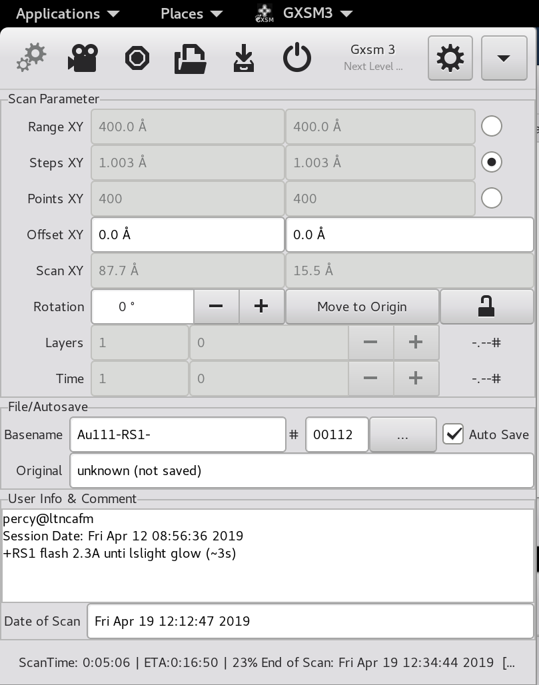

Front Matter {#ch:frontmatter}
The Gxsm Project: Gxsm itself, drivers, utilities, demos and
documentation\
Copyright (C) 1999 - 2022 Percy Zahl, Andreas Klust, et al\
Email: mailzahl@users.sourceforge.net\
WWW: http://gxsm.sourceforge.net
This program is free software; you can redistribute it and/or modify it under the terms of the GNU General Public License as published by the Free Software Foundation; either version 2 of the License, or (at your option) any later version.
This program is distributed in the hope that it will be useful, but WITHOUT ANY WARRANTY; without even the implied warranty of MERCHANTABILITY or FITNESS FOR A PARTICULAR PURPOSE. See the GNU General Public License for more details.
You should have received a copy of the GNU General Public License along with this program; see the file COPYING. If not, write to the Free Software Foundation, Inc., 59 Temple Place - Suite 330, Boston, MA 02111-1307, USA.
See the end of this document for complete license: Appendix [app:gpl]{reference-type="ref" reference="app:gpl"}
Introduction
[]{#ch:intro label="ch:intro"}
GXSM[^1] -- Gnome X Scanning Microscopy -- is a powerful graphical interface for any kind of 2D and 3D (multi layered 2D mode) data acquisition methods, especially designed for scanning probe microscopy (SPM).

The aim of the GXSM-project is to provide a versatile control system being suitable to operate all different kinds of scanning probe microscopes. This includes in particular scanning tunneling microscopes (STMs) and atomic force microscopes (AFMs), but it is not restricted to these types. In principle, it is also flexible enough to operate scanning angle resolved light scattering (SARLS) experiments or spot profile analysis of low-energy electron diffraction (SPA-LEED) optics. One reason for this versatility is that all these instrument have in common a 2D-data acquisition by scanning sequentially points in the $xy$-plane.
Certainly, GXSM gains also versatility, because of its design concept: a DSP (digital signal processor) based hardware is used for the data acquisition, the scan signal generation and various feedback lopes ($z$ distance between tip and sample but also the oscillation control of an NC-AFM). The graphical user interface (GUI) provides not only tools for 1D (line profiles), 2D (images), 3D (morphology), and even 4D (time series) data visualization, but also for manipulation and analysis. As the GUI is based on plug-ins, it can be easily extended to new tasks.
A third aspect is the python interface of GXSM allowing to control the GUI remotely at almost real-time level. The performance of the python scripting is more than sufficient to provide a functionality far beyond batch acquisition and processing of data, but also allowing to code complex data aquisition tasks without programming anything directly on DSP level.
The project was founded at the Institute for Solid State Physics[^2] Leading developer of GXSM is Percy Zahl[^3], but more than 50 SPM groups world wide are not just using GXSM but also contribute to its further development. The program was developed for Linux[^4] using the Gtk$+$/Gnome libraries[^5] for the GUI.
And best of all: it's free! GXSM is licensed under the terms of the GNU General Public License (GPL, see [app:gpl]{reference-type="ref" reference="app:gpl"}). Therefore, everyone can copy, use, and modify GXSM for his/her needs provided that the resulting software is again published under the GPL licence.
The following list gives a short overview on the main features of GXSM:
-
Support for STM, AFM, and any other 2D (2D layered and multi-channel) data-acquisition method can be supported by GXSM.
-
The GXSM core handles multiple channels of 2D (layered) data fields of arbitrary type and unlimited size and a grey-scale or false color view of 2D data image, using "on the fly" data transformation as there are:
-
"Quick": a line regression and subtraction is performed on each scan-line
-
"Direct": only contrast and brightness adjustments
-
"Direct HiLit": same as direct but marks the lowest and highest values
-
"Plane": on-the-fly 3-point defined plane subtraction
-
"Logarithmic": logarithmic scaling mode, almost used by diffraction methods
-
"Horizontal": automatic line average subtraction
-
"Differential": view of X-derivative, $[Z(X+1)-Z(X)]$
-
"Periodic": like "Direct" Mode, but grey-scale is applied modulo #grey-levels
-
More sophisticated background correction and data analysis methods are implemented as filters.
For more details on the different modes of the visualization of the data see Chap. [ch:visual]{reference-type="ref" reference="ch:visual"}.
-
-
Data presentation is by default a (grey or false color) image but it can be switched to a profile view (1d), profile extraction on the fly... Or you can use a 3D shaded view (using OpenGL 4.6) which now offers a sophisticated scene setup.
-
The "high-level" scan controller is now separated from the GXSM core and is build as PlugIn, while the real-time "low-level" scanning process, data-acquisition and feedback loop (if needed), runs on the DSP -- if present, else a dummy image is produced. The current scan-line, marked in red, can be viewed simultaneously as profile. (View$\rightarrow$red Profile)
-
Extremely flexible configuration of user settings and data acquisition and probe modes.
-
Easy to extend by Plug-ins, some examples of existing Plug-ins:
-
Background correction methods
-
Image filtering 1D and 2D, including several methods for Fourier transformation
-
Image analysis/statistics: histogram, step analysis, ...
-
Geometric transformations: scaling, rotation, affine, ...
-
and more, write and contribute your favorite math Plug-in for GXSM! Don't be afraid, there is a step by step instruction tutorial and a math Plug-in generator, all you need to do is to add your math code!
-
-
Special datafile/formats import/export filters, (extensible via PlugIns):
-
a set of simple raw formats (.byt, .sht, .flt, ...), see [pi:primitiveimexport]{reference-type="ref" reference="pi:primitiveimexport"}
-
Digital Instruments/Veeco Metrology Group, NanoScope (import) (go to http://veeco.com to learn more, see [pi:nanoimport]{reference-type="ref" reference="pi:nanoimport"})
-
Omicron NanoTechnology, Scala (http://www.omicron.de, see [pi:OmicronIO]{reference-type="ref" reference="pi:OmicronIO"})
-
WSxM/Nanotec Electronica SPM, WSxM (http://wwww.nanotec.es, see [pi:WSxMio]{reference-type="ref" reference="pi:WSxMio"})
-
SDF (Surface Data Format, see [pi:sdfimport]{reference-type="ref" reference="pi:sdfimport"})
-
UK2000 v3.4, see [pi:UK2kimport]{reference-type="ref" reference="pi:UK2kimport"}
-
G. Meyer STMAFM, see [pi:gmeyerimexport]{reference-type="ref" reference="pi:gmeyerimexport"}
-
Park Scientific (AFM, basic import support, see [pi:primitiveimexport]{reference-type="ref" reference="pi:primitiveimexport"})
-
"d2d" data format (SPA--LEED), used by "spa4" and "xspa", see [pi:spa4imexport]{reference-type="ref" reference="pi:spa4imexport"}
-
any NetCDF file containing a 2D data array
-
Grey Images in .pgm format (P5 type), see [pi:pngImExport]{reference-type="ref" reference="pi:pngImExport"}
-
PNG image format, see [pi:pngImExport]{reference-type="ref" reference="pi:pngImExport"}
-
Targa (.tga) export, in 8/16/24bits color depth, [pi:primitiveimexport]{reference-type="ref" reference="pi:primitiveimexport"}
-
-
Special instrument control Plug-Ins:
-
a Scan Control Panel
-
SPM: DSP Control: Feedback and Scan Characteristics (Speed, ...)
-
SPM: Mover/slider and auto approach controls
-
SPM: flexible Probing: Spectroscopy (STS), Force-Distance Curves in AFM, using the DSP also Digital LockIn Probing (e.g. dI/dU (U)) is possible without any additional hardware! But not only SPM, I already ran our Quadrupole Mass Analyzer with it!
-
Phase Lock Loop (PLL) operation in combination with the SR-MK3Pro & A810 boards (with enabled PLL option)
-
-
NanoPlotter Plug-in: reads simple HPGL files and moves along the plot path using predefined DSP settings (U, I, Feedback Parameters, Speed, ...) for "Pen-Up" and "Pen-Down" movements. This was in principle already possible via the remote control and a script, but now it's much more convenient and user friendly! Even the path is shown ... can be modified, saved and re-plotted!
-
A Plug-in categorization mechanism automatically only loads the Plug-ins for the actual setup: E.g. no Hardware Control Plug-ins are loaded in "offline" Data Analysis Mode.
-
At the time there are more than 80 Plug-ins.
-
-
GXSM itself is fully hardware independent. It provides a generic hardware-interface (HwI) plugin infrastructure to attach any kind of hardware. The HwI has to manage low level tasks and pass the data to the GXSM core, plus, it has to provide the necessary GUI to provide user access and control to hardware/instrument specific parameters and tasks.
-
Scan parameter changing on the fly -- you can modify the feedback parameters or switch the tunneling voltage while scanning in between scan lines. For example: Imagine you are scanning a STM topography and current Image, the surface looks flat, then just change the feedback parameters to CP=0 and CI=1e-5 (something small) and now you are in constant height mode!
-
On the fly, even while scanning is in progress, you can view profiles, extract data parts, re-scale -- just do all you like!
-
Event mechanism: User "Events" like bias change are now logged and attached to the scan data and can be visualized (Position marker). Other events like "Probe" (any kind of spectroscopy or manipulation) while or after scanning are automatically attached to the scan with all data and can be visualized via a single mouse click. The same for automatic rastered "Probe" scanning.
-
Python Remote Control Interface: The GXSM scanning progress is scriptable using Python. Or may be used to automatize math/data analysis tasks.
-
Cross Platform: works on i386 and PPC based Linux distributions; a Windows port besides the main stream is available http://wgxsm4w.sf.net.
-
GXSM takes full advantage of the NetCDF data format.
-
Scan auto saving, session logging, Plug-in details browser, NC-View, PS-Printing and a Icon generator are available too.
The GXSM software can be divided into three parts: First, the GXSM core providing the main functionality for handling and visualization of data described in the first part of this manual. The basic functions of the GXSM core can be extended using plug-ins. Plug-ins are small pieces of software dynamically linked to the core. The plug-ins are described in the second part of the manual. The third part documents the digital signal processing (DSP) software needed to carry out actual measurements. The DSP software is not necessary for applications using GXSM only for data analysis purposes.
[^1]: The Project can be found in the Internet at http://gxsm.sourceforge.net
[^2]: Institut für Festkörperphysik, Universität Hannover, Appelstraße 2, D-30167 Hannover, Germany\ www.fkp.uni-hannover.de
[^3]: E-mail: zahl@users.sourceforge.net
[^4]: For example Debian 9.3.
[^5]: GXSM currently requires Gnome 3.2 and GTK+ 3.22